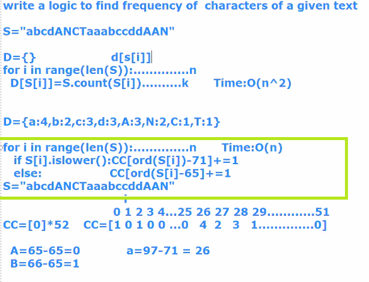
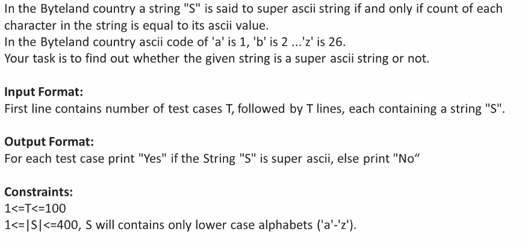
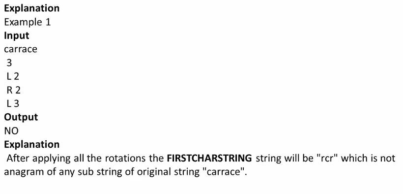
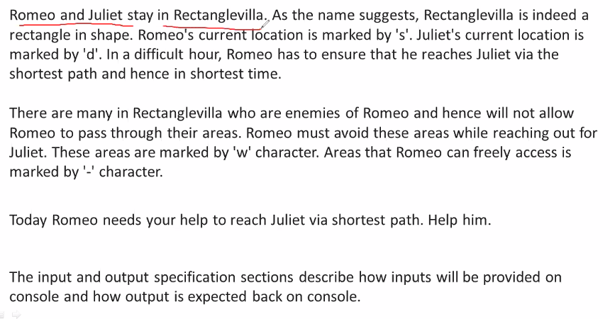
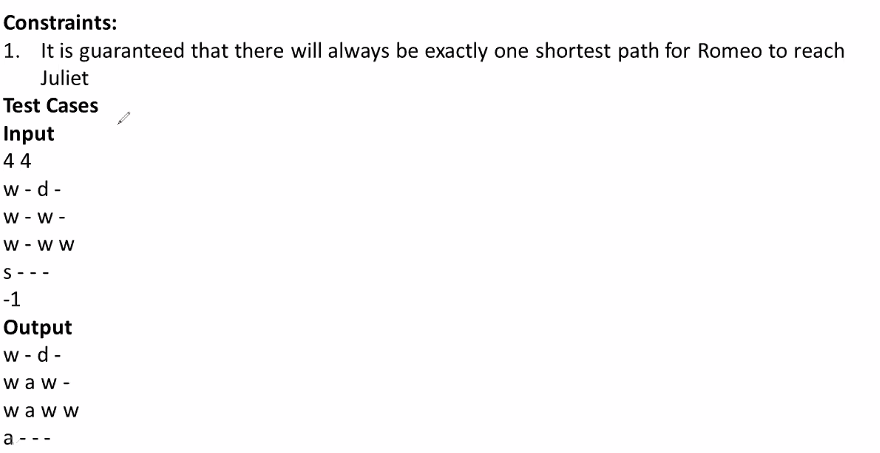

String is a collection of characters
String POOL:
let s1="code" <-123
assume its reference is 123
now new object s2="code", now it will check whether it is already there or not, if yes, no new memory will be allocated, it will also have same reference as 123
hence by doing so it optimizes memory usage.
-------------------------------------------------------------------------------------------------------------------------------------------------------------------------------------------------------------------------------------------------
Counting the frequency of alphabets in a string in O(n)

-------------------------------------------------------------------------------------------------------------------------------------------------------------------------------------------------------------------------------------------------
1)



This program's Timecomplexity is O(n) and Spacecomplexity=O(1)
-------------------------------------------------------------------------------------------------------------------------------------------------------------------------------------------------------------------------------------------------
2)



-------------------------------------------------------------------------------------------------------------------------------------------------------------------------------------------------------------------------------------------------
3)




----------------------------------------------------------------------------------------------------------------------------------